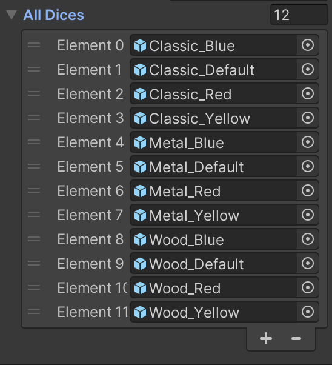

This website is essentially where I showcase all of the projects and other works I have done. It is technically my portfolio. However, I wanted to also use this website to log everything I have done in terms of making videos, art, music and programming projects so I can look back and see the progress I've made. Feel free to browse through and look at what I have done so far!
If you would like to reach out to me, send me an email at "thegamersstrategy@gmail.com"
Dice Maker is my most latest project that I worked on. This is a personal project that I did for the GMTK Game Jam 2022. Here is some description of the game idea. You take the role as a Dice Maker where your job is to create dice requested by the customers. However, if you so choose, you can rig the dice so that it is more likely to land on 6. The game is suppose to have different kinds of small endings based on what dice the player made but we ran out of time so we could only complete the first day. This is the best prototype I have ever made (probably because the other prototype I made for the GMTK Game Jam 2021 was incomplete). This project is very interesting to say the least. I have never made this genre of game before. I am more comfortable with making 2D platformer so it was an eye opening experience to see the amount of effort required to create a game in this genre.
Since I was the director for this game, I had to distribute the work properly as well as setting up ways to make sure everyone's work is inside the final game. For this project, I used GitHub to make it easier to merge the Unity project throughout the two days time limit. Unfortunately, my friend who helped me with coding the project is not that experienced with Unity so I had to code almost all of the game's mechanics. Here's the list of mechanics that I implemented in the game:

Figure 2: Customization Layout
Customization
Inside the game, we wanted the player to be able to create customizable dice. Not only that, we wanted the dice that the player made to show up so that the player know what kind of dice they made. I figured out a system that allows the game to uniquely identify which dice in particular that the player made based on their selection. To give an example, our game allows the player to choose the material and colour of the dice. If the player chose the colour "yellow" and the material "metal", the game would display a yellow metal dice. I did this by sorting the array of dice objects in a way that I can simply add integers based on the colour and material the player chose to uniquely identify which dice in the array the player made. For example, for a "yellow metal" dice I simply add 3 for "yellow" and 4 for "metal" to get the "yellow metal" dice which can be accessed with dice[7] (the array that hold all dice objects).
Dialogue Manager
Dice Maker is a very dialogue heavy game. Without the dialogue, the game would feel very empty and pointless. To deal with all the different kinds of dialogues each customers will have, I created a Dialogue Manager to oversee what dialogue should be said depending on what the player did. This is slightly more difficult than I imagined at first since the scene state keeps getting resetted when you go back and forth from making the dice and dealing with the customer. I had this issue where after the player made the dice, the customers just keep saying their default dialogue which made the game stuck. Thankfully after quite a bit of research, I managed to keep track of the progress of the game by putting up boolean flags that allows the game to know which customer we're dealing with and if the player has made a dice for that customer or not. This works even if the scene was resetted as it just basically fast forward the progress to where the player is currently at.
Interactive Buttons
Most game will eventually include buttons that does something in the game and this game is no exception. This is probably the most important and the most simplest thing to add in a game. However, this is the first time I actually implemented interactive buttons inside a game. I made a button that move the characters to different part of the game, a button to roll a dice, a button for customization and so on. It's definitely tough to make these buttons as each of them does different things and some buttons have some mechanics that I never implemented before so it took some time to figure out how to make it work. One example is the "Material" button where only one of the button can be selected at a time so I had to figure out how to "pop out" the selected button when a different button is selected. Fortunately it all worked out fine.
If you took a look at my very first prototype, you would see that there is barely any gameplay elements in it besides walking and jumping. Which is why for the very first time, I had to deal with switching scenes. The switching aspect was surprisingly easy. Just add a single line of code and it will transport the player to that scene. However, when you want to go back and forth between scenes, you will eventually realize that the scene state is resetted to its default state. This is not what I want for this game so I had to figure out how to make the game "remember" which state it was on before switching scenes. Thankfully I managed to figure it out. This is also the reason why my Dialogue Manager worked out fine.
Requirement Check
This is the first time I also had to check whether the player did the task assigned to them or not. This is probably the easiest one to do since I essentially just need to check whether the dice id that the customer requested is the same as the one that player made. Most of the hard part was taken care of when I figured out the Customization part of this game.
Problems I faced during the project
Since this is the second time I made a game with a team of artists and programmer, I thought I could finally make a prototype of a game that I will be very proud of. Turns out I was very wrong. What I noticed in the second day working on this project is that I spent around 50% of my time in Unity just placing and adjusting the assets inside the game instead of just coding the mechanics. This in turn made me unable to spend more time on the mechanics, which in turn make the game shorter than I intended it to be. This wouldn't be too bad if I had someone to work on the mechanics of the game. However, my programmer friend is not that experienced with Unity so it made the progress of the game slower than intended.
Not only that, the game contains a lot of mechanics that I had to implement for the first time so I had to spend a lot of time researching when my implementation doesn't work. This in turn resulted in me spending almost 12+ hours just trying to figure something out or placing the objects in the right place in Unity. Definitely not a good use of the time especially when only 48 hours is given to do the project. As I keep learning more by doing more projects like these, I hope that I would eventually know how to deal with these problems so that for the next GMTK Game Jam I would finally make something I'm proud to share with other people.
Future plans
As I strive to be a better game developer, I would definitely keep on making projects like these. However, I'm not only going to confine myself inside the gaming industry. I also want to experience more things such as web development (which is why I'm making this website), software development, mobile apps development and many more. Although some aspects of the computing science field is a bit more daunting than others, for example, computer security, computer networks and artificial intelligence, I still plan on learning more about them as they are such interesting topics in the field that I've growned to love. Look forward to see more of the projects I did as I will update them in this website!